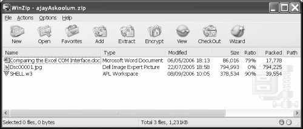

Zipping and unzipping files in APL+Win
Vector 23:1, page 100
Verify file¶
Verify whether a file exists using PathFileExists; this is an API call. If this declaration is not found in your INI file, add it, thus:
The test to verify declaration is:
Create empty Zip file¶
An empty Zip file can be created using the following function:
∇ Z←CreateZipFile R
[1] ⍝ Ajay Askoolum
[2] :if 0=⎕wcall 'PathFileExists' R
[3] R ⎕xncreate Z←¯1+⌊/0,⎕nnums,⎕xnnums
[4] ('PK¨←',(18⍴⎕tcnul),⎕tcnl,⎕tclf) ⎕nappend Z
[5] ⎕nuntie Z
[6] Z←1
[7] :else
[8] Z←0
[9] :endif
∇
This function returns 1 if successful and 0 otherwise; the right-hand argument is a fully qualified filename.
Signature of Zip file¶
The first 22 bytes of the file varies, depending on the application that created the Zip file. A file created thus can be used by WinZip. You can write a function to verify whether a particular file is a ZIP file by matching the first 4 bytes—see line [4].
Add files to an existing Zip file¶
The following function will add a list of files to an existing Zip file:
∇ Z←L AddToZip R;⎕wself
[1] ⍝ Ajay Askoolum
[2] ⍝ L = Fully qualified name of an existing and valid Zip file
[3] ⍝ R is a list of files to add or refresh inside ZIP
[4] :if 0=⍴'ShApp' ⎕wi 'self'
[5] ⎕wself←'ShApp' ⎕wi 'Create' 'Shell.Application'
[6] :else
[7] ⎕wself←'ShApp'
[8] :endif
[9] :while 0≠⍴R←,R
[10] ⎕wi 'xNamespace().CopyHere' L (⎕io⊃R)
[11] R←1↓R
[12] :endwhile
∇
Note that the function does not delete the instance of the Shell Application object; this is deliberate and intended to save time creating the object when the function is used repeatedly.
⍝ Add a single file
'c:\ajayaskoolum.zip' AddToZip ⊂'c:\Comparing the Excel COM Interface.doc'
⍝ Add multiple files
files←'C:\aa(2)\DSC00001.JPG' 'C:\OURFILES\AJAY\APL\SHELL\SHELL.W3'
'c:\ajayaskoolum.zip' AddToZip files
Using Winzip to explore¶
The file can be opened by WinZip; see below.

List file names within Zip file¶
The list of files in a given Zip file can be returned by this function:
∇ Z←L EnumZip R;⎕wself;i;j
[1] ⍝ Ajay Askoolum
[2] ⍝ Return list of files found in Zip file R
[3] :if 0=⍴'ShApp' ⎕wi 'Self'
[4] ⎕wself←'ShApp' ⎕wi 'Create' 'Shell.Application'
[5] :else
[6] ⎕wself←'ShApp'
[7] :endif
[8] Z←0/⊂''
[9] :if 0≠⎕wi 'xNamespace()' R ⍝ Verify existence
[10] ⎕wi 'xNamespace().Items>.tr' R
[11] :if 0≠i←'.tr' ⎕wi 'xCount'
[12] i←(-⎕io)+⍳i
[13] j←(⊂'.tr') ⎕wi¨ (⊂⊂'xItem().Path'),¨i ⍝ Contents
[14] L←(⊂'.tr') ⎕wi¨ (⊂⊂'xItem().IsFolder'),¨i
[15] Z←Z,(~L)/j ⍝ Files
[16] :if 0≠⍴L←L/j ⍝ Folders
[17] R←(1≥+\'\'=R)/R
[18] Z←Z,⊃,/EnumZip ¨(⊂R,'\'),¨L
[19] :endif
[20] :endif
[21] :endif
[22] :if 1=+/'EnumZip'^.⍉⎕si[;⍳7]
[23] :if 0≠⍴'.tr' ⎕wi 'self'
[24] '.tr' ⎕wi 'Delete'
[25] :endif
[26] :endif
∇
Note that this is a recursive function.
EnumZip 'c:\ajayaskoolum.zip'
Comparing the Excel COM Interface.doc DSC00001.JPG SHELL.w3
⍴EnumZip 'c:\ajayaskoolum.zip'
3
⊃EnumZip 'c:\ajayaskoolum.zip'
Comparing the Excel COM Interface.doc
DSC00001.JPG
SHELL.w3
Extracting files from Zip file¶
The following function will extract the files from an existing Zip file into a specified location:
∇ L ExtractZip R;⎕wself
[1] ⍝ Ajay Askoolum
[2] ⍝ L is the target location for extracted files
[3] ⍝ R is the fully qualified name of Zip file
[4] :if 0=⍴'ShApp' ⎕wi 'self'
[5] ⎕wself←'ShApp' ⎕wi 'Create' 'Shell.Application'
[6] :else
[7] ⎕wself←'ShApp'
[8] :endif
[9] ⎕wi 'NameSpace().CopyHere' L ((⎕wi 'NameSpace().Items' R) ⎕wi 'obj')
∇
'c:\zzz' ExtractZip 'c:\ajayaskoolum.zip'
⎕lib 'c:\zzz'
Comparing the Excel COM Interface.doc
DSC00001.JPG
SHELL.w3
Note that the target location must exist.
What is missing?¶
Lots! If you examine the properties, methods, and events of the Shell object, it is clear that this object does not expose the compression properties or methods.
Potential¶
It is possible to do lots more with these facilities; I’ll leave you to explore.